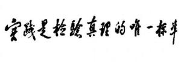

Character speech
On reform 

1. "Reform is China's second revolution. This is a very important and necessary thing to do, although it is a risky thing. "
2, "whether black or white, catching mice is a good cat."
3, "reform is the only way for China to develop productive forces."
4, "reform and opening up should be more daring, dare to experiment, not like a woman with small feet. If you are sure of something, try it boldly and go ahead boldly. "
5, "reform should include the reform of the political system."
6, "emancipate your mind and reform faster."
about development1, "development is the absolute principle!"
2, "science and technology are the first productive forces."
3, "to master new technologies, one must be good at learning and innovation."
4, "emancipate our minds, use our brains and seek truth from facts."
5, "respect knowledge, respect talents."
6, "create an environment in which top-notch talents can stand out."
7, "some regions have the conditions to develop first, and the regions that develop first will drive the regions that develop later, and eventually achieve common prosperity."
8, "greening the motherland for the benefit of all generations."
about the country1, "what is leadership? Leadership is service. "
2, "China's problems still lie within the communist party."
3, "we must oppose corruption throughout the process of reform and opening up."
4, "serve the people wholeheartedly and go deep into the masses to listen to their voices; Dare to tell the truth, oppose falsehood, do more practical things instead of using false names. It is necessary to distinguish between public and private affairs and not to exchange principles for human feelings. We should appoint people on merit and oppose the appointment of people on their own. "
5. "The basic line must be maintained for 100 years and cannot be shaken."
6, "realize the four modernizations and never seek hegemony."
7, "one country, two systems."
8, "hong kong people ruling hong kong have a boundary and a standard, that is, hong kong people with patriots as the main body must govern hong kong. We don't require them to all agree with China's socialist system. We only require them to love their motherland and Hong Kong. "
9, "achieving national unity is the aspiration of the nation."
on diplomacy1, "observe calmly, face difficulties calmly and defend our position." Keep a low profile, strive for time, and never seek hegemony. "
2, "in the affairs of various countries, we must respect the parties and people of various countries. they should find their own way, explore and solve problems. other parties should not act as Lao zi's party and give orders. We oppose being given orders by others, and we must never give orders to others. This should become an important principle. "
3, "China is a permanent member of the UN security Council, and China understands its responsibilities. There are two things we can trust, one is to stick to the principle and the other is to keep our word. We do not engage in political games or language games. "
4, "China's foreign policy is consistent, with three sentences. the first sentence is against hegemonism, the second sentence is to safeguard world peace, and the third sentence is to strengthen unity and cooperation with the third world."
5, "frankly speaking, sovereignty is not an issue that can be discussed."